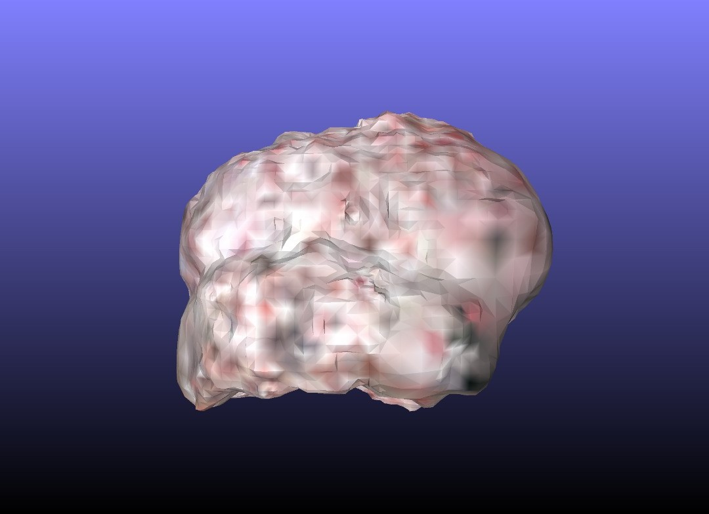
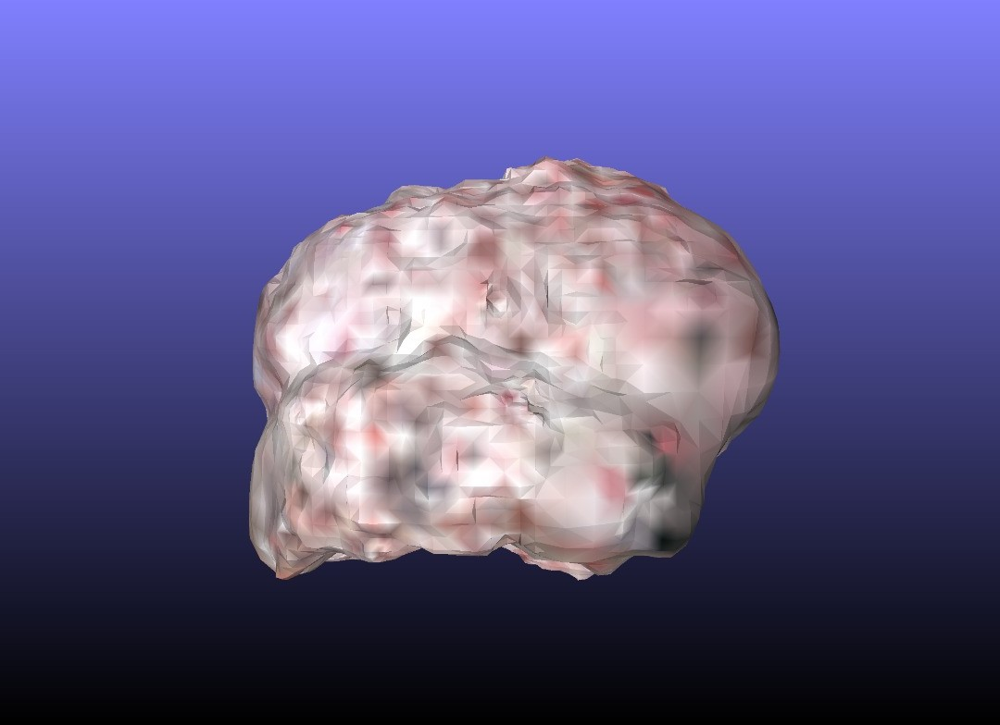

(This file has been changed within the FixText branch)Medical Imaging is done using different methods on demand. Neurosurgery has got delicate operations done on patients and medical images play an important role in preoperative diagnosis. Moreover, after the operation, the patient needs to be taken back into the imaging room for postoperative imaging for validation. The need to move the patient to the imaging room is eliminated if the imaging apparatus is portable and can be taken into the operation room. Not only the patient wouldn't have to be moved, but also the imaging procedure could be done more precisely and conveniently.
C-Arm is a portable imaging apparatus which is capable of taking 2D images from different angles. Another portable apparatus which is a recent product among medical imaging devices is the O-Arm. Although C-Arm made a breakthrough in medial imaging inside the operation room, O-Arm is completely superior. This apparatus can easily take images from all 360 degrees with it's motorized axes and can be controlled remotely. So it will alleviate the harmful effects of X-rays for the surgeon and the medical staff.
The overall function of O-Arm is somewhat similar to a CT-scan. The imaging module is installed on a rotating gantry and is possible to take images from all angles. Before leaping on to constructing such device, it is more efficient to test the mechanisms and challenges which exist in such device with this level of complication. The design and fabrication of an experimental model of such apparatus is intended in order to justify the mechanical design and also the 3D reconstruction algorithms which will eventually turn the images into a 3D model. This project is planned upon this demand.
This project mostly focuses on the Mechanical design and the functionality of this experimental model. The design started with studying the existing devices such as the CT-scan and the C-Arm alongside with the patents for the O-Arm. Then, a concept design for the full scale device was developed in order to understand the parts and the mechanism.
The experimental model was designed with an approximately 1:3 scale and the parts are tried to be easily available and not too expensive. It consists of two linear axes and one tilting motion in order to be able to adjust the object in middle of the gantry. The gantry rotates completely and takes images from all sides. Stepper motors for all axes except the tilting motion which required special considerations and a DC motor with a gearbox seemed more plausible.
In further stages of design process, a mechanism was designed in order to cover the missing part of the gantry after the object is put in the middle of it. There were countless challenges that were overcome in the design and fabrication process in different phases. Solving these problems were essential if this project needs to be taken to another level.
An Arduino board is used in order to control the functions of the device. A simple software is also developed for the operator to interact with this model. The software will be developed further in order to integrate the 3D reconstruction algorithms.


As this device is an experimental model, it only uses an RGB camera that is sufficient in order to test the reconstruction algorithms. Feeding the images taken by the device to these algorithms will result in a 3D model. One of the results of a human brain model is shown below.
 
